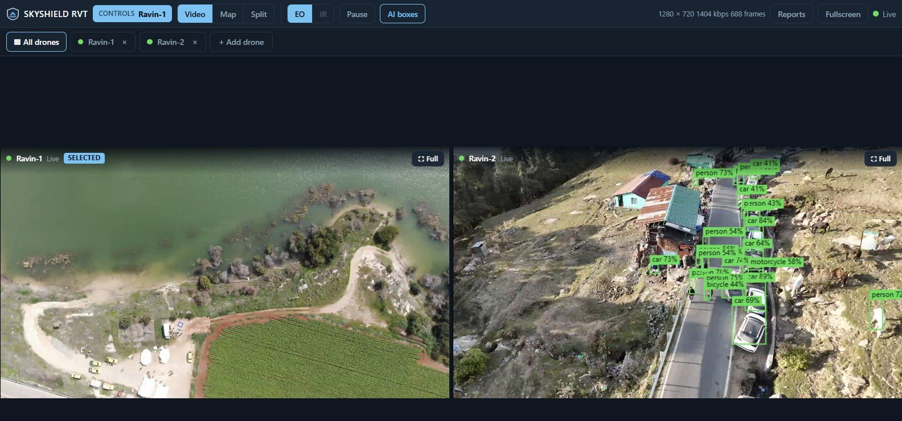

Remote Video Terminal — Multi-Drone Viewer
A control room, a command post or a base can watch several SkyShield ground stations at once: live video, the map, the AI boxes and the alerts of each drone, side by side in a browser. It is free, it is one small file, and it needs no internet connection.

All drones together. Open any one of them full screen with a double-click.
How to use it
index.html by double-clicking it. It opens in your browser. Chrome or Edge is recommended.
To show it on other screens too (a tablet, a second PC), run Start RVT Multi.cmd
from the same folder. It serves the viewer to your local network and prints the address to open
on the other devices. This needs Python installed on that one computer.
What you need
Why is it a download and not a page on this website? This website is served over a secure connection (https), and browsers do not allow a secure page to connect to a ground station on your own network. Opened from your computer, the viewer has no such limit. Your video never passes through this website or any SkyShield server: it goes straight from each ground station to your screen.